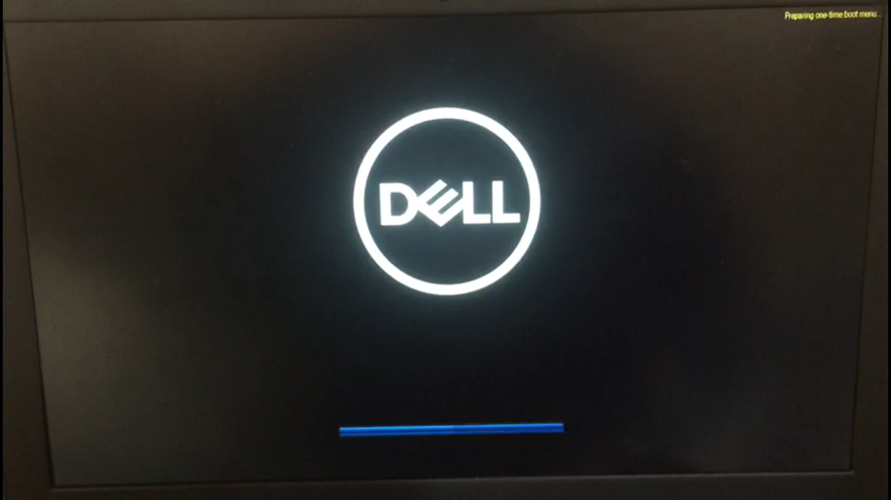
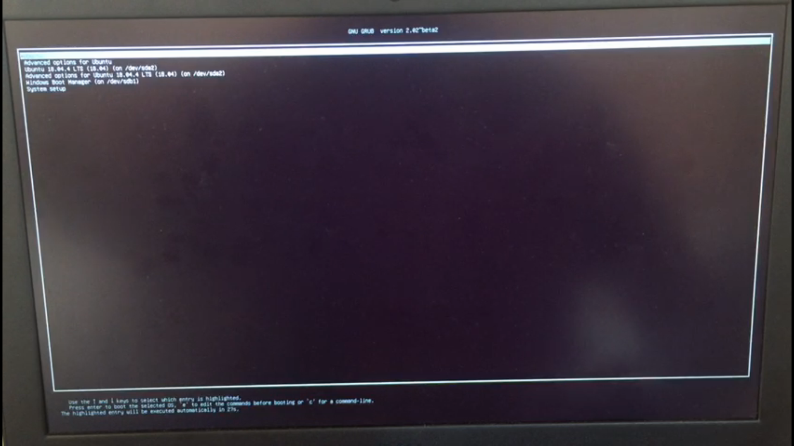

Configurações de BIOS para Boot do SSD.
Exemplo de configuração em um notebook Dell e numeração do SSD do tipo 0xB..., que são SSD's com tabela de formação GPT.
De forma geral, este procedimento pode ser reproduzido em notebooks de outras marcas, sendo feitas as adaptações para cada BIOS.
ETAPA 1
Desabilitando o BitLocker
Com o Windowns inicializado, pesquise por Bitlocker no menu iniciar.

O Bitlocker deve estar desabilitado, como aparece na imagem abaixo. Se o BitLocker estiver ligado, Desligue.
# ETAPA 2
Acessando a BIOS
Para acessar a BIOS, é necessário:
- Desligue o notebook;
- Concecte o SSD na USB;
- Ligue o notebook;
- Assim que a logomarca da Dell aparecer, pressione tecla F2, varias vezes se necessário, caso tenha um notebook de outra marca pesquise qual tecla deve ser precionada.

Quando pressionar a tecla F2 irá aparecer uma mensagem no canto superior direto.

Se tudo deu certo, deve aparecer uma tela parecida como da imagem abaixo.
Para maquinas diferentes de Dell, é esperado que a interface da Bios seja diferente.
O que vamos alterar
Lembrete, estamos fazendo a configuração para boot apenas do SSD numeração 0xB....
Vá em Security --> PPT Security: Deixe a opção PPT On desmarcada.

Em General --> Boot Sequence: Verifique se aparece marcada a opção UEFI: kingston ....... Partition 3, igual a imagem abaixo.

Salves as alterações em Aplly e Exit para sair da BIOS e reiniciar o notebook.
Inicializando o SSD
Para inicialiar o boot pelo SSD, é necessário:
- Desligue o notebook;
- Concecte o SSD na USB;
- Ligue o notebook;
- Assim que a logomarca da Dell aparecer, pressione tecla F12, varias vezes se necessário, caso tenha um notebook de outra marca pesquise qual tecla deve ser precionada.
Quando pressionar a tecla F12 irá aparecer uma mensagem no canto superior direto.

- Nas opções de Boot escolha a opção UEFI: kingston ....... Partition 3 e pressione ENTER.

- Irá carregar a tela de grub do linux. Não é preciso alterar nada, apenas pressione ENTER.

Se tudo ocorrer bem, o Linux irá inicializar.
Agora podemos usar o linux para as aulas e atividades do semestre.
Bons estudos!!!